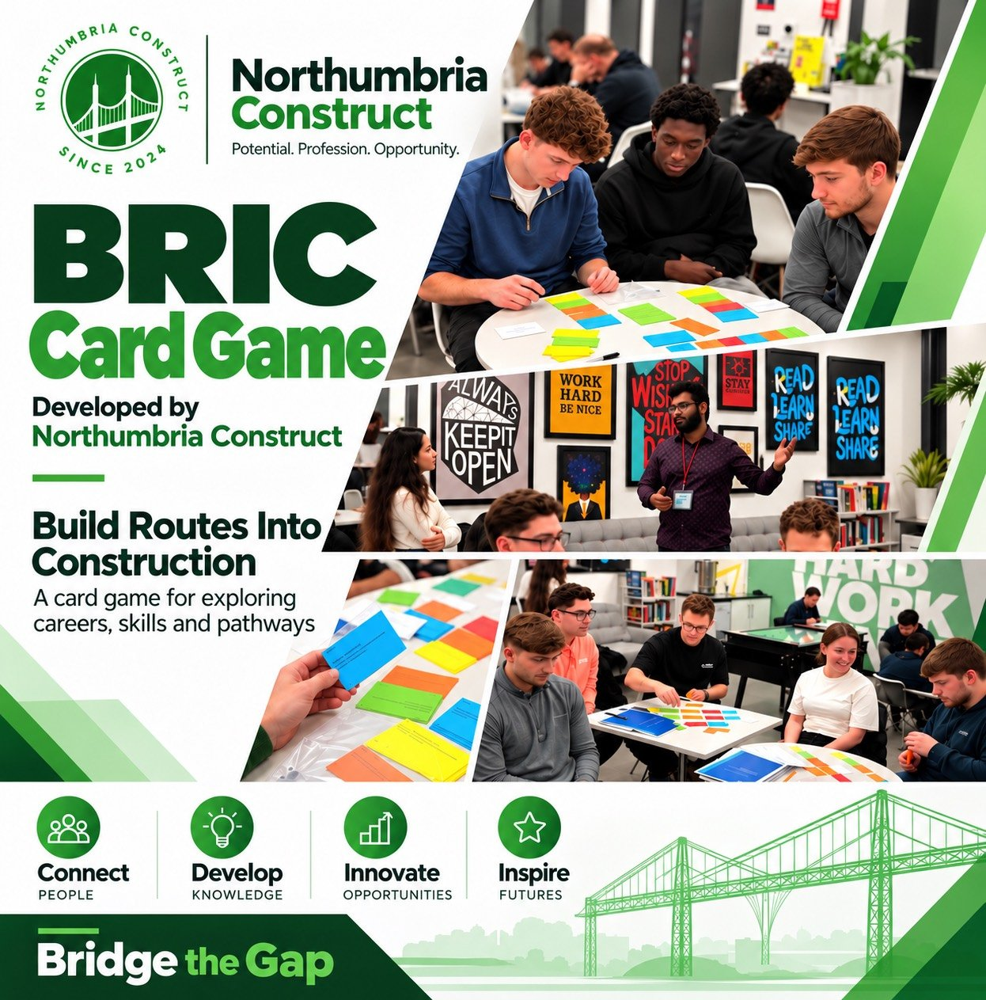

Explore tools, systems and frameworks shaped by research, project delivery and professional engagement.
Our purpose
From interest to action.
We believe promising interests should have a clear route from ideation to action.
With the right support, networks and collaboration, ideas can develop into practical responses to real industry challenges.
The Innovation Lab creates space for interests, ideas and project experience to develop into useful technologies, frameworks and solutions that improve how projects are planned, delivered and managed.
Innovation · Developed by Northumbria Construct
BRIC — Build Routes Into Construction.
Explore. Discover. Plan. Progress.
One industry. Many careers. Multiple pathways.
An interactive educational card game helping students and aspiring professionals discover, construct and defend their own routes into construction and the built environment.
BRIC combines career exploration, collaborative problem-solving and strategic decision-making. It connects qualifications, apprenticeships, work experience and professional development in a hands-on learning experience.
Career guidance can make it difficult to see how different routes connect. BRIC encourages participants to recognise transferable skills and explore alternatives: your qualification is a starting point, not your destination.

BRIC — Build Routes Into Construction · developed by Northumbria Construct
How BRIC works
Teams use colour-coded cards to build credible pathways from a starting point to a construction career. Five interconnected elements guide the journey:
START — Where are you now?
Begin with a qualification, apprenticeship, technical education or experience in another industry.
ROUTE — How could you get there?
Combine qualifications, apprenticeships, employment and practical experience into a realistic pathway.
DESTINATION — Where do you want to go?
Explore roles such as Construction Project Manager, BIM Manager, Structural Engineer, Quantity Surveyor and Sustainability Specialist.
WILDCARD — What if circumstances change?
Adapt to constraints such as earning while studying or pursuing a career without attending university full-time, and justify your choices.
PROGRESSION — What comes next?
Consider continuing professional development, leadership, specialisation and professional recognition.
The challenge is to show that multiple credible routes can lead to the same career, through discussion, teamwork and friendly competition.
From concept to classroom
BRIC first appeared at the CIOB North East Tomorrow’s Leaders Professional Engagement Day at Gateshead College on . The initial physical edition included 50 cards per team, with career destinations, educational pathways, locally relevant Gateshead College opportunities and discussion challenges.
The pilot provided practical insights into student engagement, gameplay and instruction clarity. These are informing refinements to gameplay, simpler instructions and the learning experience. Explore the event and photographs →
Learning through exploration
BRIC is designed to support career awareness, understanding of alternative pathways, critical thinking, teamwork, communication and career confidence. For educators and professionals, it offers a structured way to begin career conversations and connect learning with real occupations.
Designed to evolve
Development continues following the first physical pilot. Cards can be tailored to institutions, qualification systems, occupational specialisms and regional opportunities. Northumbria Construct is exploring stronger educational content, refinements to the physical game and potential digital adaptations. These are future possibilities rather than released products.
Interested in educational workshops, further testing or collaboration? Explore BRIC with us →
NorCon Projects · In development
Developing, testing and improving through real-world application.
A lightweight project management application for small teams delivering social-impact projects.
NorCon Projects brings planning, coordination, progress monitoring and reporting into one environment, with embedded accountability, change control and sustainability tracking. Its aim is structured project governance without unnecessary complexity.
Northumbria Construct tests successive versions on real projects, using practical experience to inform continuous improvement.
Two projects. Two versions. One evolving solution.
Version 1
Northumbria Construct Oxford-Style Debate
The first application tested core capabilities: project briefs and activity planning; Gantt charts and progress tracking; stakeholder coordination and RACI matrices; project dashboards and reporting.
Volunteering at the Gateshead College engagement day
Building on the first application, the delivery environment introduced integrated project baselines and governance; risk, issue and change control; benefits and value management; sustainability performance tracking; enhanced reporting and project controls.
Real projects help evaluate functionality, identify limitations and refine features and workflows. Each iteration informs our understanding of small teams’ delivery challenges and how digital tools can support them without unnecessary administration.
Our goal is to make good project management more accessible. NorCon Projects remains in iterative development and testing; no public release date is announced.
Our approach
Built around real project needs.
01
Interest
Begin with curiosity about the real challenges experienced by project communities.
02
Ideate
Bring people and perspectives together to shape the opportunity and develop the idea.
03
Develop
Translate the idea into focused frameworks, tools and technologies.
04
Learn
Test, reflect and continuously improve through practical use.
Follow the journey
Help ideas develop through practice.
Connect with Northumbria Construct to learn more about the Innovation Lab and future announcements.